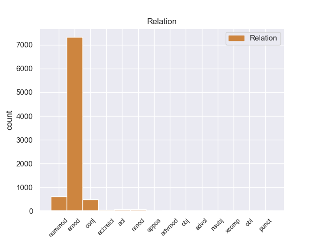
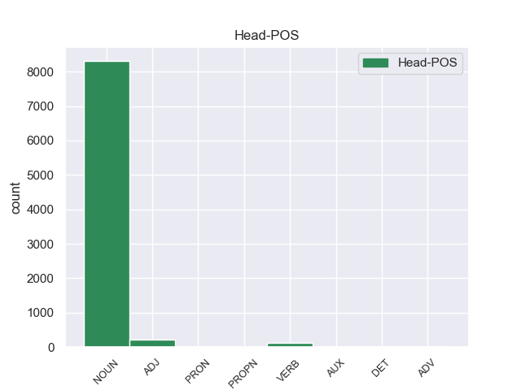
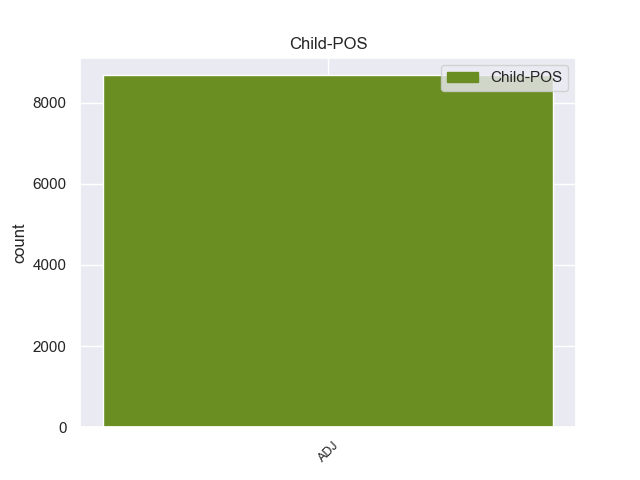

Distribution of features within this leaf



Agreement Rules sorted by frequency.
- When the dependent token is the adjectival modifier(amod) of the head token, and the dependent token is ADJ.
1 En _ _ _ _ 0 _ _ _
2 1991 _ _ _ _ 0 _ _ _
3 , _ _ _ _ 0 _ _ _
4 como _ _ _ _ 0 _ _ _
5 ya _ _ _ _ 0 _ _ _
6 está _ _ _ _ 0 _ _ _
7 indicado _ _ _ _ 0 _ _ _
8 en _ _ _ _ 0 _ _ _
9 el _ _ _ _ 0 _ _ _
10 párrafo _ _ _ _ 0 _ _ _
11 anterior _ _ _ _ 0 _ _ _
12 , _ _ _ _ 0 _ _ _
13 se _ _ _ _ 0 _ _ _
14 creó _ _ _ _ 0 _ _ _
15 un _ _ _ _ 0 _ _ _
16 equipo equipo NOUN _ Gender=Masc|Number=Sing 0 _ _ _
17 ad _ _ _ _ 0 _ _ _
18 hoc hoc ADJ _ Gender=Masc|Number=Sing 16 amod _ _
19 para _ _ _ _ 0 _ _ _
20 averiguar _ _ _ _ 0 _ _ _
21 como _ _ _ _ 0 _ _ _
22 se _ _ _ _ 0 _ _ _
23 podía _ _ _ _ 0 _ _ _
24 desarrollar _ _ _ _ 0 _ _ _
25 el _ _ _ _ 0 _ _ _
26 Dialogo _ _ _ _ 0 _ _ _
27 Social _ _ _ _ 0 _ _ _
28 , _ _ _ _ 0 _ _ _
29 este _ _ _ _ 0 _ _ _
30 equipo _ _ _ _ 0 _ _ _
31 estaba _ _ _ _ 0 _ _ _
32 formado _ _ _ _ 0 _ _ _
33 por _ _ _ _ 0 _ _ _
34 representantes _ _ _ _ 0 _ _ _
35 de _ _ _ _ 0 _ _ _
36 todas _ _ _ _ 0 _ _ _
37 las _ _ _ _ 0 _ _ _
38 organizaciones _ _ _ _ 0 _ _ _
39 relacionadas _ _ _ _ 0 _ _ _
40 con _ _ _ _ 0 _ _ _
41 CES _ _ _ _ 0 _ _ _
42 , _ _ _ _ 0 _ _ _
43 UNICE _ _ _ _ 0 _ _ _
44 y _ _ _ _ 0 _ _ _
45 CEEP _ _ _ _ 0 _ _ _
46 ; _ _ _ _ 0 _ _ _
1 Ahora _ _ _ _ 0 _ _ _
2 se _ _ _ _ 0 _ _ _
3 aunan _ _ _ _ 0 _ _ _
4 cocina _ _ _ _ 0 _ _ _
5 y _ _ _ _ 0 _ _ _
6 entorno _ _ _ _ 0 _ _ _
7 , _ _ _ _ 0 _ _ _
8 me _ _ _ _ 0 _ _ _
9 encanto _ _ _ _ 0 _ _ _
10 la _ _ _ _ 0 _ _ _
11 bodega _ _ _ _ 0 _ _ _
12 , _ _ _ _ 0 _ _ _
13 las _ _ _ _ 0 _ _ _
14 sillas _ _ _ _ 0 _ _ _
15 son _ _ _ _ 0 _ _ _
16 comodisimas _ _ _ _ 0 _ _ _
17 , _ _ _ _ 0 _ _ _
18 la _ _ _ _ 0 _ _ _
19 iluminacion _ _ _ _ 0 _ _ _
20 es _ _ _ _ 0 _ _ _
21 excepcional _ _ _ _ 0 _ _ _
22 , _ _ _ _ 0 _ _ _
23 alcanzas _ _ _ _ 0 _ _ _
24 un _ _ _ _ 0 _ _ _
25 grado _ _ _ _ 0 _ _ _
26 de _ _ _ _ 0 _ _ _
27 satisfaccion _ _ _ _ 0 _ _ _
28 que _ _ _ _ 0 _ _ _
29 no _ _ _ _ 0 _ _ _
30 se _ _ _ _ 0 _ _ _
31 puede _ _ _ _ 0 _ _ _
32 describir _ _ _ _ 0 _ _ _
33 , _ _ _ _ 0 _ _ _
34 hay _ _ _ _ 0 _ _ _
35 que _ _ _ _ 0 _ _ _
36 probar _ _ _ _ 0 _ _ _
37 lo _ _ _ _ 0 _ _ _
38 , _ _ _ _ 0 _ _ _
39 es _ _ _ _ 0 _ _ _
40 la _ _ _ _ 0 _ _ _
41 primera primero ADJ _ Gender=Fem|Number=Sing|NumType=Ord 42 nummod _ _
42 vez vez NOUN _ Gender=Fem|Number=Sing 0 _ _ _
43 en _ _ _ _ 0 _ _ _
44 mi _ _ _ _ 0 _ _ _
45 vda _ _ _ _ 0 _ _ _
46 que _ _ _ _ 0 _ _ _
47 una _ _ _ _ 0 _ _ _
48 cocina _ _ _ _ 0 _ _ _
49 me _ _ _ _ 0 _ _ _
50 emociona _ _ _ _ 0 _ _ _
51 hasta _ _ _ _ 0 _ _ _
52 ese _ _ _ _ 0 _ _ _
53 punto _ _ _ _ 0 _ _ _
54 . _ _ _ _ 0 _ _ _
1 Esta _ _ _ _ 0 _ _ _
2 teoría _ _ _ _ 0 _ _ _
3 se _ _ _ _ 0 _ _ _
4 avenía _ _ _ _ 0 _ _ _
5 bien _ _ _ _ 0 _ _ _
6 con _ _ _ _ 0 _ _ _
7 la _ _ _ _ 0 _ _ _
8 creencia _ _ _ _ 0 _ _ _
9 de _ _ _ _ 0 _ _ _
10 el _ _ _ _ 0 _ _ _
11 Romanticismo _ _ _ _ 0 _ _ _
12 en _ _ _ _ 0 _ _ _
13 un _ _ _ _ 0 _ _ _
14 volkgeist _ _ _ _ 0 _ _ _
15 , _ _ _ _ 0 _ _ _
16 " _ _ _ _ 0 _ _ _
17 genio _ _ _ _ 0 _ _ _
18 o _ _ _ _ 0 _ _ _
19 espíritu _ _ _ _ 0 _ _ _
20 de _ _ _ _ 0 _ _ _
21 el _ _ _ _ 0 _ _ _
22 pueblo _ _ _ _ 0 _ _ _
23 " _ _ _ _ 0 _ _ _
24 , _ _ _ _ 0 _ _ _
25 autor autor NOUN _ Gender=Masc|Number=Sing 0 _ _ _
26 colectivo _ _ _ _ 0 _ _ _
27 y _ _ _ _ 0 _ _ _
28 anónimo anónimo ADJ _ Gender=Masc|Number=Sing 25 conj _ _
29 de _ _ _ _ 0 _ _ _
30 una _ _ _ _ 0 _ _ _
31 poesía _ _ _ _ 0 _ _ _
32 nacional _ _ _ _ 0 _ _ _
33 . _ _ _ _ 0 _ _ _
1 Pelecanimimus _ _ _ _ 0 _ _ _
2 ( _ _ _ _ 0 _ _ _
3 gr. _ _ _ _ 0 _ _ _
4 " _ _ _ _ 0 _ _ _
5 imitador _ _ _ _ 0 _ _ _
6 de _ _ _ _ 0 _ _ _
7 pelícanos _ _ _ _ 0 _ _ _
8 " _ _ _ _ 0 _ _ _
9 ) _ _ _ _ 0 _ _ _
10 es _ _ _ _ 0 _ _ _
11 un _ _ _ _ 0 _ _ _
12 género género NOUN _ Gender=Masc|Number=Sing 0 _ _ _
13 representado representado ADJ _ Gender=Masc|Number=Sing|VerbForm=Part 12 acl _ _
14 por _ _ _ _ 0 _ _ _
15 una _ _ _ _ 0 _ _ _
16 única _ _ _ _ 0 _ _ _
17 especie _ _ _ _ 0 _ _ _
18 de _ _ _ _ 0 _ _ _
19 dinosaurio _ _ _ _ 0 _ _ _
20 terópodo _ _ _ _ 0 _ _ _
21 ornitomimosauriano _ _ _ _ 0 _ _ _
22 basal _ _ _ _ 0 _ _ _
23 , _ _ _ _ 0 _ _ _
24 que _ _ _ _ 0 _ _ _
25 vivió _ _ _ _ 0 _ _ _
26 a _ _ _ _ 0 _ _ _
27 principios _ _ _ _ 0 _ _ _
28 de _ _ _ _ 0 _ _ _
29 el _ _ _ _ 0 _ _ _
30 período _ _ _ _ 0 _ _ _
31 Cretácico _ _ _ _ 0 _ _ _
32 , _ _ _ _ 0 _ _ _
33 hace _ _ _ _ 0 _ _ _
34 algo _ _ _ _ 0 _ _ _
35 más _ _ _ _ 0 _ _ _
36 de _ _ _ _ 0 _ _ _
37 125 _ _ _ _ 0 _ _ _
38 millones _ _ _ _ 0 _ _ _
39 de _ _ _ _ 0 _ _ _
40 años _ _ _ _ 0 _ _ _
41 , _ _ _ _ 0 _ _ _
42 en _ _ _ _ 0 _ _ _
43 el _ _ _ _ 0 _ _ _
44 Barremiense _ _ _ _ 0 _ _ _
45 , _ _ _ _ 0 _ _ _
46 en _ _ _ _ 0 _ _ _
47 lo _ _ _ _ 0 _ _ _
48 que _ _ _ _ 0 _ _ _
49 es _ _ _ _ 0 _ _ _
50 hoy _ _ _ _ 0 _ _ _
51 Europa _ _ _ _ 0 _ _ _
52 . _ _ _ _ 0 _ _ _
1 Contrario _ _ _ _ 0 _ _ _
2 a _ _ _ _ 0 _ _ _
3 cualquiera _ _ _ _ 0 _ _ _
4 otra _ _ _ _ 0 _ _ _
5 apreciación _ _ _ _ 0 _ _ _
6 que _ _ _ _ 0 _ _ _
7 le _ _ _ _ 0 _ _ _
8 de _ _ _ _ 0 _ _ _
9 relevancia _ _ _ _ 0 _ _ _
10 o _ _ _ _ 0 _ _ _
11 sentido sentido NOUN _ Gender=Masc|Number=Sing 0 _ _ _
12 ( _ _ _ _ 0 _ _ _
13 por _ _ _ _ 0 _ _ _
14 ejemplo _ _ _ _ 0 _ _ _
15 , _ _ _ _ 0 _ _ _
16 que _ _ _ _ 0 _ _ _
17 sea _ _ _ _ 0 _ _ _
18 " _ _ _ _ 0 _ _ _
19 hermoso hermoso ADJ _ Gender=Masc|Number=Sing 11 nmod _ _
20 " _ _ _ _ 0 _ _ _
21 ) _ _ _ _ 0 _ _ _
22 posiblemente _ _ _ _ 0 _ _ _
23 genere _ _ _ _ 0 _ _ _
24 alguna _ _ _ _ 0 _ _ _
25 objeción _ _ _ _ 0 _ _ _
26 o _ _ _ _ 0 _ _ _
27 contradicción _ _ _ _ 0 _ _ _
28 . _ _ _ _ 0 _ _ _
1 Hombres _ _ _ _ 0 _ _ _
2 , _ _ _ _ 0 _ _ _
3 mujeres _ _ _ _ 0 _ _ _
4 y _ _ _ _ 0 _ _ _
5 niños _ _ _ _ 0 _ _ _
6 llevan _ _ _ _ 0 _ _ _
7 la _ _ _ _ 0 _ _ _
8 parte parte NOUN _ Gender=Fem|Number=Sing 0 _ _ _
9 superior _ _ _ _ 0 _ _ _
10 de _ _ _ _ 0 _ _ _
11 la _ _ _ _ 0 _ _ _
12 cabeza _ _ _ _ 0 _ _ _
13 completamente _ _ _ _ 0 _ _ _
14 rasurada rasurada ADJ _ Gender=Fem|Number=Sing 8 acl:relcl _ _
15 , _ _ _ _ 0 _ _ _
16 las _ _ _ _ 0 _ _ _
17 mujeres _ _ _ _ 0 _ _ _
18 dejan _ _ _ _ 0 _ _ _
19 caer _ _ _ _ 0 _ _ _
20 hacia _ _ _ _ 0 _ _ _
21 atrás _ _ _ _ 0 _ _ _
22 el _ _ _ _ 0 _ _ _
23 resto _ _ _ _ 0 _ _ _
24 de _ _ _ _ 0 _ _ _
25 el _ _ _ _ 0 _ _ _
26 cabello _ _ _ _ 0 _ _ _
27 , _ _ _ _ 0 _ _ _
28 mientras _ _ _ _ 0 _ _ _
29 los _ _ _ _ 0 _ _ _
30 hombres _ _ _ _ 0 _ _ _
31 se _ _ _ _ 0 _ _ _
32 hacen _ _ _ _ 0 _ _ _
33 un _ _ _ _ 0 _ _ _
34 moño _ _ _ _ 0 _ _ _
35 . _ _ _ _ 0 _ _ _
1 A _ _ _ _ 0 _ _ _
2 Piñera _ _ _ _ 0 _ _ _
3 le _ _ _ _ 0 _ _ _
4 ha _ _ _ _ 0 _ _ _
5 ido er VERB _ Gender=Masc|Number=Sing|Tense=Past|VerbForm=Part 0 _ _ _
6 bien _ _ _ _ 0 _ _ _
7 en _ _ _ _ 0 _ _ _
8 el _ _ _ _ 0 _ _ _
9 plano _ _ _ _ 0 _ _ _
10 económico _ _ _ _ 0 _ _ _
11 y _ _ _ _ 0 _ _ _
12 muy _ _ _ _ 0 _ _ _
13 mal mal ADJ _ Gender=Masc|Number=Sing 5 advmod _ _
14 en _ _ _ _ 0 _ _ _
15 el _ _ _ _ 0 _ _ _
16 plano _ _ _ _ 0 _ _ _
17 político _ _ _ _ 0 _ _ _
18 . _ _ _ _ 0 _ _ _
1 Buffy _ _ _ _ 0 _ _ _
2 debe _ _ _ _ 0 _ _ _
3 concentrar _ _ _ _ 0 _ _ _
4 se _ _ _ _ 0 _ _ _
5 en _ _ _ _ 0 _ _ _
6 la _ _ _ _ 0 _ _ _
7 Ascensión _ _ _ _ 0 _ _ _
8 y _ _ _ _ 0 _ _ _
9 lo _ _ _ _ 0 _ _ _
10 ocurrido ocurrido ADJ _ Gender=Masc|Number=Sing 12 nsubj _ _
11 ha _ _ _ _ 0 _ _ _
12 sido sido VERB _ Gender=Masc|Number=Sing|Tense=Past|VerbForm=Part 0 _ _ _
13 para _ _ _ _ 0 _ _ _
14 distraer _ _ _ _ 0 _ _ _
15 la _ _ _ _ 0 _ _ _
16 . _ _ _ _ 0 _ _ _
1 Considerando _ _ _ _ 0 _ _ _
2 la _ _ _ _ 0 _ _ _
3 evidencia _ _ _ _ 0 _ _ _
4 de _ _ _ _ 0 _ _ _
5 que _ _ _ _ 0 _ _ _
6 pocos _ _ _ _ 0 _ _ _
7 documentos _ _ _ _ 0 _ _ _
8 se _ _ _ _ 0 _ _ _
9 aceptan _ _ _ _ 0 _ _ _
10 como _ _ _ _ 0 _ _ _
11 totalmente _ _ _ _ 0 _ _ _
12 fiables _ _ _ _ 0 _ _ _
13 , _ _ _ _ 0 _ _ _
14 Louis _ _ _ _ 0 _ _ _
15 Gottschalk _ _ _ _ 0 _ _ _
16 establece _ _ _ _ 0 _ _ _
17 como _ _ _ _ 0 _ _ _
18 regla _ _ _ _ 0 _ _ _
19 general _ _ _ _ 0 _ _ _
20 : _ _ _ _ 0 _ _ _
21 " _ _ _ _ 0 _ _ _
22 para _ _ _ _ 0 _ _ _
23 cada _ _ _ _ 0 _ _ _
24 documento _ _ _ _ 0 _ _ _
25 particular _ _ _ _ 0 _ _ _
26 el _ _ _ _ 0 _ _ _
27 proceso _ _ _ _ 0 _ _ _
28 de _ _ _ _ 0 _ _ _
29 establecer _ _ _ _ 0 _ _ _
30 la _ _ _ _ 0 _ _ _
31 credibilidad _ _ _ _ 0 _ _ _
32 debe _ _ _ _ 0 _ _ _
33 ser _ _ _ _ 0 _ _ _
34 realizado realizado VERB _ Gender=Masc|Number=Sing|Tense=Past|VerbForm=Part 0 _ _ _
35 por _ _ _ _ 0 _ _ _
36 separado separado ADJ _ Gender=Masc|Number=Sing 34 obl _ _
37 , _ _ _ _ 0 _ _ _
38 independientemente _ _ _ _ 0 _ _ _
39 de _ _ _ _ 0 _ _ _
40 la _ _ _ _ 0 _ _ _
41 credibilidad _ _ _ _ 0 _ _ _
42 general _ _ _ _ 0 _ _ _
43 de _ _ _ _ 0 _ _ _
44 el _ _ _ _ 0 _ _ _
45 autor _ _ _ _ 0 _ _ _
46 " _ _ _ _ 0 _ _ _
47 . _ _ _ _ 0 _ _ _
1 Han _ _ _ _ 0 _ _ _
2 sido _ _ _ _ 0 _ _ _
3 identificados _ _ _ _ 0 _ _ _
4 dos _ _ _ _ 0 _ _ _
5 dialectos _ _ _ _ 0 _ _ _
6 : _ _ _ _ 0 _ _ _
7 el _ _ _ _ 0 _ _ _
8 Licio _ _ _ _ 0 _ _ _
9 A _ _ _ _ 0 _ _ _
10 estándar _ _ _ _ 0 _ _ _
11 , _ _ _ _ 0 _ _ _
12 y _ _ _ _ 0 _ _ _
13 el _ _ _ _ 0 _ _ _
14 Licio licio PROPN _ Gender=Masc|Number=Sing 0 _ _ _
15 B _ _ _ _ 0 _ _ _
16 o _ _ _ _ 0 _ _ _
17 milio milio ADJ _ Gender=Masc|Number=Sing 14 appos _ _
18 , _ _ _ _ 0 _ _ _
19 menos _ _ _ _ 0 _ _ _
20 común _ _ _ _ 0 _ _ _
21 . _ _ _ _ 0 _ _ _
1 Pero _ _ _ _ 0 _ _ _
2 mientras _ _ _ _ 0 _ _ _
3 que _ _ _ _ 0 _ _ _
4 su _ _ _ _ 0 _ _ _
5 hermana _ _ _ _ 0 _ _ _
6 Jenny _ _ _ _ 0 _ _ _
7 ha _ _ _ _ 0 _ _ _
8 declarado _ _ _ _ 0 _ _ _
9 que _ _ _ _ 0 _ _ _
10 ella _ _ _ _ 0 _ _ _
11 siempre _ _ _ _ 0 _ _ _
12 quiso _ _ _ _ 0 _ _ _
13 ser _ _ _ _ 0 _ _ _
14 cantante _ _ _ _ 0 _ _ _
15 , _ _ _ _ 0 _ _ _
16 Linn _ _ _ _ 0 _ _ _
17 nunca _ _ _ _ 0 _ _ _
18 ha _ _ _ _ 0 _ _ _
19 dicho dicho VERB _ Gender=Masc|Number=Sing|Tense=Past|VerbForm=Part 0 _ _ _
20 algo _ _ _ _ 0 _ _ _
21 parecido parecido ADJ _ Gender=Masc|Number=Sing 19 obj _ _
22 . _ _ _ _ 0 _ _ _
1 Los _ _ _ _ 0 _ _ _
2 consumidores _ _ _ _ 0 _ _ _
3 que _ _ _ _ 0 _ _ _
4 optan _ _ _ _ 0 _ _ _
5 por _ _ _ _ 0 _ _ _
6 pagar _ _ _ _ 0 _ _ _
7 el _ _ _ _ 0 _ _ _
8 PVP _ _ _ _ 0 _ _ _
9 " _ _ _ _ 0 _ _ _
10 completo _ _ _ _ 0 _ _ _
11 " _ _ _ _ 0 _ _ _
12 por _ _ _ _ 0 _ _ _
13 un _ _ _ _ 0 _ _ _
14 teléfono _ _ _ _ 0 _ _ _
15 libre _ _ _ _ 0 _ _ _
16 son _ _ _ _ 0 _ _ _
17 minoría _ _ _ _ 0 _ _ _
18 , _ _ _ _ 0 _ _ _
19 así _ _ _ _ 0 _ _ _
20 que _ _ _ _ 0 _ _ _
21 visto _ _ _ _ 0 _ _ _
22 lo _ _ _ _ 0 _ _ _
23 visto visto ADJ _ Gender=Masc|Number=Sing 28 advcl _ _
24 , _ _ _ _ 0 _ _ _
25 hoy _ _ _ _ 0 _ _ _
26 se _ _ _ _ 0 _ _ _
27 ha _ _ _ _ 0 _ _ _
28 bajado bajado VERB _ Gender=Masc|Number=Sing|Tense=Past|VerbForm=Part 0 _ _ _
29 la _ _ _ _ 0 _ _ _
30 persiana _ _ _ _ 0 _ _ _
31 con _ _ _ _ 0 _ _ _
32 la _ _ _ _ 0 _ _ _
33 intención _ _ _ _ 0 _ _ _
34 de _ _ _ _ 0 _ _ _
35 repartir _ _ _ _ 0 _ _ _
36 mejor _ _ _ _ 0 _ _ _
37 sus _ _ _ _ 0 _ _ _
38 recursos _ _ _ _ 0 _ _ _
39 y _ _ _ _ 0 _ _ _
40 centrar _ _ _ _ 0 _ _ _
41 se _ _ _ _ 0 _ _ _
42 en _ _ _ _ 0 _ _ _
43 otros _ _ _ _ 0 _ _ _
44 canales _ _ _ _ 0 _ _ _
45 . _ _ _ _ 0 _ _ _
1 La _ _ _ _ 0 _ _ _
2 ex _ _ _ _ 0 _ _ _
3 - - ADJ _ Gender=Fem|Number=Sing 4 punct _ _
4 secretraria secretraria NOUN _ Gender=Fem|Number=Sing 0 _ _ _
5 de _ _ _ _ 0 _ _ _
6 Jack _ _ _ _ 0 _ _ _
7 Taylor _ _ _ _ 0 _ _ _
8 , _ _ _ _ 0 _ _ _
9 Audry _ _ _ _ 0 _ _ _
10 va _ _ _ _ 0 _ _ _
11 a _ _ _ _ 0 _ _ _
12 la _ _ _ _ 0 _ _ _
13 casa _ _ _ _ 0 _ _ _
14 para _ _ _ _ 0 _ _ _
15 tratar _ _ _ _ 0 _ _ _
16 de _ _ _ _ 0 _ _ _
17 que _ _ _ _ 0 _ _ _
18 le _ _ _ _ 0 _ _ _
19 devuelvan _ _ _ _ 0 _ _ _
20 el _ _ _ _ 0 _ _ _
21 trabajo _ _ _ _ 0 _ _ _
22 . _ _ _ _ 0 _ _ _
Disagree Examples:
1 Es _ _ _ _ 0 _ _ _
2 un _ _ _ _ 0 _ _ _
3 bar bar NOUN _ Gender=Masc|Number=Sing 0 _ _ _
4 disfrazado _ _ _ _ 0 _ _ _
5 de _ _ _ _ 0 _ _ _
6 restaurante _ _ _ _ 0 _ _ _
7 la _ _ _ _ 0 _ _ _
8 comida _ _ _ _ 0 _ _ _
9 esta _ _ _ _ 0 _ _ _
10 demasiado _ _ _ _ 0 _ _ _
11 salada salada ADJ _ Gender=Fem|Number=Sing 3 amod _ _
12 . _ _ _ _ 0 _ _ _
1 No _ _ _ _ 0 _ _ _
2 empleamos _ _ _ _ 0 _ _ _
3 potenciadores _ _ _ _ 0 _ _ _
4 de _ _ _ _ 0 _ _ _
5 sabor _ _ _ _ 0 _ _ _
6 ni _ _ _ _ 0 _ _ _
7 ningún _ _ _ _ 0 _ _ _
8 artificio _ _ _ _ 0 _ _ _
9 culinario _ _ _ _ 0 _ _ _
10 que _ _ _ _ 0 _ _ _
11 pueda _ _ _ _ 0 _ _ _
12 alterar _ _ _ _ 0 _ _ _
13 nuestra _ _ _ _ 0 _ _ _
14 filosofía _ _ _ _ 0 _ _ _
15 de _ _ _ _ 0 _ _ _
16 " _ _ _ _ 0 _ _ _
17 comida _ _ _ _ 0 _ _ _
18 que _ _ _ _ 0 _ _ _
19 cocinan _ _ _ _ 0 _ _ _
20 las _ _ _ _ 0 _ _ _
21 mamas _ _ _ _ 0 _ _ _
22 y _ _ _ _ 0 _ _ _
23 abuelas abuela NOUN _ Gender=Masc|Number=Plur 0 _ _ _
24 griegas griegas ADJ _ Gender=Fem|Number=Sing 23 amod _ _
25 " _ _ _ _ 0 _ _ _
26 . _ _ _ _ 0 _ _ _
1 Al _ _ _ _ 0 _ _ _
2 final _ _ _ _ 0 _ _ _
3 , _ _ _ _ 0 _ _ _
4 Calvin _ _ _ _ 0 _ _ _
5 y _ _ _ _ 0 _ _ _
6 Rusty _ _ _ _ 0 _ _ _
7 , _ _ _ _ 0 _ _ _
8 así _ _ _ _ 0 _ _ _
9 como _ _ _ _ 0 _ _ _
10 los _ _ _ _ 0 _ _ _
11 otros _ _ _ _ 0 _ _ _
12 novatos _ _ _ _ 0 _ _ _
13 , _ _ _ _ 0 _ _ _
14 son _ _ _ _ 0 _ _ _
15 nombrados _ _ _ _ 0 _ _ _
16 hermanos _ _ _ _ 0 _ _ _
17 en _ _ _ _ 0 _ _ _
18 sus _ _ _ _ 0 _ _ _
19 respectivas respectiva ADJ _ Gender=Masc|Number=Plur 20 amod _ _
20 fraternidades fraternidade NOUN _ Gender=Fem|Number=Sing 0 _ _ _
21 , _ _ _ _ 0 _ _ _
22 mientras _ _ _ _ 0 _ _ _
23 que _ _ _ _ 0 _ _ _
24 Frannie _ _ _ _ 0 _ _ _
25 se _ _ _ _ 0 _ _ _
26 marcha _ _ _ _ 0 _ _ _
27 y _ _ _ _ 0 _ _ _
28 crea _ _ _ _ 0 _ _ _
29 una _ _ _ _ 0 _ _ _
30 nueva _ _ _ _ 0 _ _ _
31 fraternidad _ _ _ _ 0 _ _ _
32 , _ _ _ _ 0 _ _ _
33 llevándo _ _ _ _ 0 _ _ _
34 se _ _ _ _ 0 _ _ _
35 a _ _ _ _ 0 _ _ _
36 muchas _ _ _ _ 0 _ _ _
37 de _ _ _ _ 0 _ _ _
38 las _ _ _ _ 0 _ _ _
39 hermanas _ _ _ _ 0 _ _ _
40 de _ _ _ _ 0 _ _ _
41 ΖΒΖ _ _ _ _ 0 _ _ _
42 con _ _ _ _ 0 _ _ _
43 ella _ _ _ _ 0 _ _ _
44 . _ _ _ _ 0 _ _ _
1 También _ _ _ _ 0 _ _ _
2 hay _ _ _ _ 0 _ _ _
3 hormonas hormona NOUN _ Gender=Fem|Number=Plur 0 _ _ _
4 tróficas tróficas ADJ _ Gender=Masc|Number=Sing 3 amod _ _
5 y _ _ _ _ 0 _ _ _
6 no _ _ _ _ 0 _ _ _
7 tróficas _ _ _ _ 0 _ _ _
8 , _ _ _ _ 0 _ _ _
9 según _ _ _ _ 0 _ _ _
10 el _ _ _ _ 0 _ _ _
11 blanco _ _ _ _ 0 _ _ _
12 sobre _ _ _ _ 0 _ _ _
13 el _ _ _ _ 0 _ _ _
14 cual _ _ _ _ 0 _ _ _
15 actúan _ _ _ _ 0 _ _ _
16 . _ _ _ _ 0 _ _ _
1 El _ _ _ _ 0 _ _ _
2 Hotel _ _ _ _ 0 _ _ _
3 Oria _ _ _ _ 0 _ _ _
4 , _ _ _ _ 0 _ _ _
5 integrado _ _ _ _ 0 _ _ _
6 recientemente _ _ _ _ 0 _ _ _
7 en _ _ _ _ 0 _ _ _
8 la _ _ _ _ 0 _ _ _
9 cadena _ _ _ _ 0 _ _ _
10 Sercotel _ _ _ _ 0 _ _ _
11 Hoteles _ _ _ _ 0 _ _ _
12 , _ _ _ _ 0 _ _ _
13 está _ _ _ _ 0 _ _ _
14 situado _ _ _ _ 0 _ _ _
15 en _ _ _ _ 0 _ _ _
16 el _ _ _ _ 0 _ _ _
17 centro _ _ _ _ 0 _ _ _
18 de _ _ _ _ 0 _ _ _
19 Tolosa _ _ _ _ 0 _ _ _
20 ( _ _ _ _ 0 _ _ _
21 Guipúzcoa _ _ _ _ 0 _ _ _
22 ) _ _ _ _ 0 _ _ _
23 una _ _ _ _ 0 _ _ _
24 población población NOUN _ Gender=Fem|Number=Sing 0 _ _ _
25 tranquila tranquila ADJ _ Gender=Masc|Number=Sing 24 amod _ _
26 con _ _ _ _ 0 _ _ _
27 un _ _ _ _ 0 _ _ _
28 importante _ _ _ _ 0 _ _ _
29 patrimonio _ _ _ _ 0 _ _ _
30 artístico _ _ _ _ 0 _ _ _
31 y _ _ _ _ 0 _ _ _
32 cultural _ _ _ _ 0 _ _ _
33 . _ _ _ _ 0 _ _ _